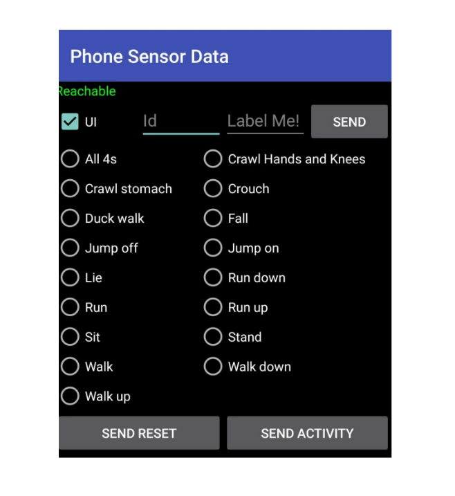
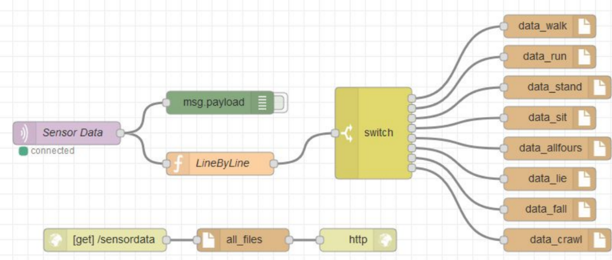

Human Activity Recognition Using a Mobile Phone Device Blog
In this blog I am only highlighting the developed application and a summary of how the data was sent,
processed and stored, for more details please refer to the thesis.
The three main sensor used in this project were:

Phone Apps Creation and Implementation
The following diagrams illustrate the two apps which were created to collect data.The Sender App
Used by the participant who has the device in a sports armband on their forearm.The three main sensor used in this project were:
- The Accelerometer is a device which measures changes in gravitational acceleration in a given axis.
- The Gyroscope within the device is used to measure orientation and velocity.
- The Magnetometer will give the magnetic field intensity on the three axes relative to the device.
The Observer App
Used by the observer who will instruct the participant and label the activities as they are performed. The observer app has the following features:- The Id textbox is used to fill the sender app handshake Id agreed on.
- Label textbox is used for custom labels.
- Send button is used to send the custom label.
- Seventeen radio buttons are used to have a fixed label value.
- Send Activity is used to start the sender app data recording the selected activity.
- Send Rest is used to stop collecting data on the sender app and to reset the sender label value.

Processing and Storing Data
Once the data is sent from the android App using MQTT protocol, A stream process was developed using Node-RED (a programming tool for wiring together APIs and online services) to listen to the MQTT topic where the data is sent. As the data is received we process it and label it, sample by sample, and store the samples into files for analyzing afterwards.
